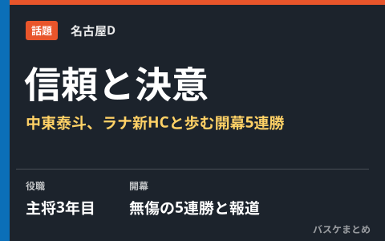

名古屋D、無傷の開幕5連勝 中東泰斗「このチームで優勝したい」ラナHCも信頼寄せる

B.PREMIERに参戦する名古屋ダイヤモンドドルフィンズが、開幕から無傷の5連勝と報じられています。チームを率いるのは、京都ハンナリーズでの指揮経験があるロイ・ラナ新ヘッドコーチ。主将3年目を迎える中東泰斗選手は新体制でも変わらぬ軸として起用され、「ドルフィンズ一筋でやってきたからこそ、このチームで優勝したい」と意気込みを語っています。ラナHCも中東選手について「泰斗のことが本当に好きだ」と信頼を口にしており、新HCと生え抜きキャプテンの関係性が好スタートを支えている様子がうかがえます。
ロイ・ラナ新HC、京都ハンナリーズでの経験を名古屋Dへ
名古屋Dは2026-27シーズンに向けて、2022年から2025年まで京都ハンナリーズでヘッドコーチを務めたロイ・ラナ氏を新指揮官として招聘しました。就任発表時には「誇りと愛着を持てる存在を創り上げていきます」とコメントしており、8月21日に発表されたロスターでは、司令塔の齋藤拓実選手やスコット・エサトン選手ら主力が残留。中東泰斗選手とエサトン選手の2人がキャプテンに指名されました。
| 項目 | 内容 |
|---|---|
| 新ヘッドコーチ | ロイ・ラナ氏（前・京都ハンナリーズHC、2022〜2025年） |
| 2026-27シーズンの主将 | 中東泰斗選手・スコット・エサトン選手（2人体制） |
| 開幕からの成績 | 無傷の5連勝と報じられている |
中東泰斗「やっぱりこのチームで優勝したい」
中東泰斗選手は2015-16シーズンのNBL新人王に輝き、2023-24シーズンには当時の西地区で名古屋Dの初優勝にも貢献してきた生え抜きの存在です。今年6月の契約更新時には「ドルフィンズ一筋でやってきたからこそ、このチームで優勝したい」と語っており、主将3年目を迎えた今季も変わらぬ目標を口にしています。ラナHCも中東選手について「泰斗のことが本当に好きだ」と評し、献身的でポジティブな姿勢を高く評価していると報じられています。
新体制と好スタートの背景
指揮官が代わるシーズンはチーム作りに時間がかかることも珍しくありませんが、中東選手やエサトン選手ら主力の残留に加え、大阪を退団していたライアン・ルーサー選手の加入もあり、名古屋Dは選手層を維持したまま新シーズンに入りました。開幕からの好調な星取りが続いているとされ、新HCと生え抜きキャプテンの信頼関係が、新体制への移行をスムーズにしている一因とみられます。
Q. 名古屋Dの現在の順位は？
A. 2026年10月16日時点の報道では開幕5連勝と伝えられていますが、最新の順位・対戦成績はB.LEAGUE公式サイトの順位表でご確認ください。
出典：バスケットボールキング「「泰斗のことが本当に好き」新HCも信頼する名古屋Dの"支柱"中東泰斗「やっぱりこのチームで優勝したい」」／バスケットボールキング「名古屋ダイヤモンドドルフィンズがロスター決定を発表…ロイ・ラナHC体制で新シーズンへ」／バスケット・カウント「名古屋ダイヤモンドドルフィンズがロイ・ラナをヘッドコーチに招聘」ほか
https://basketballking.jp/news/japan/20261016/637930.html
https://basketballking.jp/news/japan/20260821/628892.html
https://basket-count.com/article/detail/263877